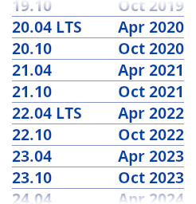

Table des matières
Xubuntu est un système d'exploitation de bureau élégant et facile à utiliser fourni avec l'environnement de bureau Xfce, ce qui le rend stable, léger en ressources et configurable.
Il est parfait pour ceux qui souhaitent tirer le meilleur parti de leurs ordinateurs de bureau, portables et netbooks, avec un look moderne et suffisamment de fonctionnalités pour une utilisation quotidienne efficace. Il fonctionne également bien sur le matériel plus ancien, les ordinateurs monocarte comme le Raspberry Pi et le sous-système Windows pour Linux (WSL).
Xubuntu a été publié pour la première fois en 2006. Il s'agit d'un projet développé par la communauté et dirigé par l'équipe Xubuntu. L'équipe est composée de bénévoles qui travaillent sur différents aspects du projet, notamment la conception, la programmation, le marketing, les tests, le site Web, la documentation et l'administration.
Pour en savoir plus, visitez le site Web Xubuntu ou Wikipédia.
Le « X » dans Xubuntu renvoie à Xfce, l'environnement de bureau et les applications fournies avec Xubuntu. Me « ubuntu » dans Xubuntu désigne sa relation avec la base Ubuntu sur laquelle le système d'exploitation est construit. Xubuntu se prononce « zoo-bun-too ».
Le mot « Ubuntu » représente le noyau philosophique du système d’exploitation. Ubuntu peut être grossièrement traduit par « humanité envers les autres ». Pour en savoir plus sur la philosophie et les idéaux derrière Ubuntu et Xubuntu, veuillez vous référer à la pagePhilosophie d'Ubuntu.

Xubuntu produit une nouvelle version supportée à long terme (LTS) tous les 2 ans. Ces versions sont prises en charge pendant 3 ans et constituent un choix populaire pour les utilisateurs qui préfèrent la stabilité aux nouvelles fonctionnalités. Tous les 6 mois, une nouvelle version intermédiaire est mise à disposition pour les utilisateurs qui souhaitent utiliser les dernières fonctionnalités au prix d'un cycle de support plus court de 9 mois. De nouvelles versions sont produites chaque avril et octobre.
Xubuntu suit le schéma de numérotation des versions d'Ubuntu, basé sur la date de sortie de la distribution. La première partie du communiqué indique l'année, tandis que la deuxième partie indique le mois. Par exemple, la première version officielle de Xubuntu a été publiée en juin 2006, son numéro de version était donc 6.06.
Il existe deux éditions de Xubuntu : Xubuntu Desktop et Xubuntu Core. Xubuntu Desktop cible l'utilisateur régulier et est livré avec une collection de logiciels préinstallés soigneusement sélectionnés par l'équipe Xubuntu. Il comprend une suite d'outils adaptés à la plupart des tâches, de l'édition d'images et de documents à la navigation Web et bien plus encore.
Xubuntu Core est une édition allégée de Xubuntu Desktop, avec des applications uniquement pour les tâches de base, telles que la gestion de fichiers et l'émulation de terminal. Cela se traduit par un ISO de téléchargement plus petit, avec moins de plugins et de bibliothèques préinstallés, ce qui sera encore plus léger en ressources. Cette édition cible les utilisateurs qui souhaitent installer uniquement les applications qu'ils souhaitent afin de répondre à leurs besoins spécifiques à partir d'une base plus propre, afin qu'ils puissent créer leur propre système d'exploitation personnalisé.
Le projet Xubuntu est entièrement dévoué aux principes du développement du logiciel libre dans lequel les utilisateurs sont encouragés à utiliser des logiciels libres qui protègent leurs libertés, voir le code source, l'améliorer, et le transmettre. Vous pouvez en apprendre plus sur le logiciel libre et la philosophie idéologique et technique qui en découle sur le site web GNU.
Linux a été créé en 1991 par un étudiant Finlandais nommé Linus Torvalds. Au cœur du système d'exploitation Xubuntu se trouve le noyau Linux. Le noyau est une partie importante de tout système d'exploitation, fournissant la passerelle de communication entre le matériel et le logiciel. En savoir plus sur Linux sur le site web du noyau Linux.
Xfce est l'environnement léger de bureau utilisé dans Xubuntu. Il a pour but d'être rapide et économe en ressources système, tout en restant visuellement attrayant et convivial. Xfce incarne la traditionnelle philosophie UNIX de modularité et de réemploi. Apprenez-en plus au sujet de Xfce sur le site web d'Xfce.
Xubuntu est construit par dessus le travail acharné des distributions Debian et Ubuntu GNU/Linux. Basé sur Ubuntu, Xubuntu prend en charge une grande variété de matériel et donne accès à une vaste archive de logiciels gratuits et open source. Une grande partie de ces logiciels, y compris les packages qui composent l'environnement de bureau Xfce, sont mis à disposition par l'équipe Debian Xfce.
 |
 |
|
| Documentation de Xubuntu |

|
Chapitre 2. Installation |